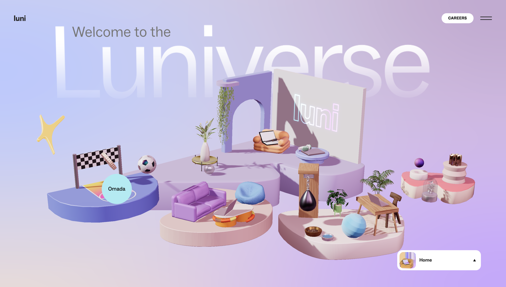

Isabelle Yeow Jia Qi // s4160554
The first thing I noticed was how interactive the whole scene felt, nearly every object shifted or reacted the moment my cursor hovered and passed over it. I realised that certain objects went further than a hover-reaction as clicking them triggered a short animated action, this drew me towards the website even more and I was interested what else I could discover.
